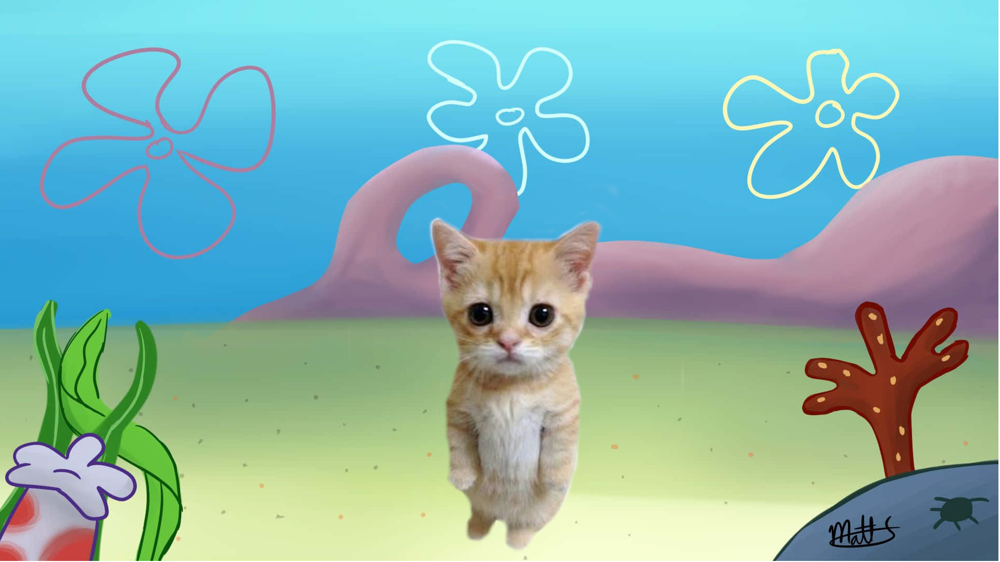
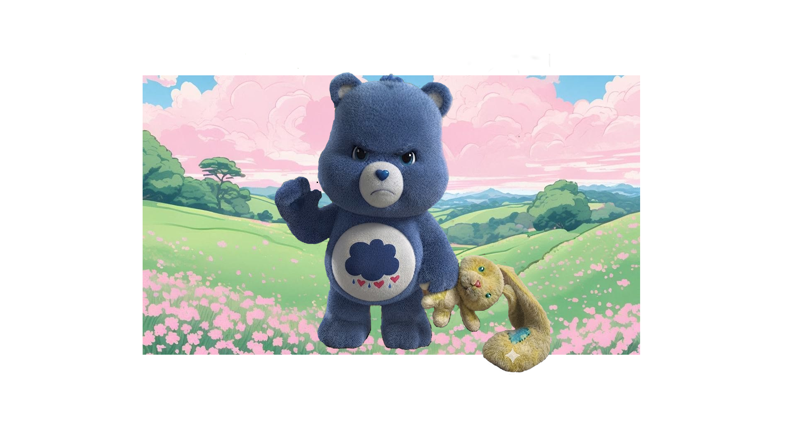
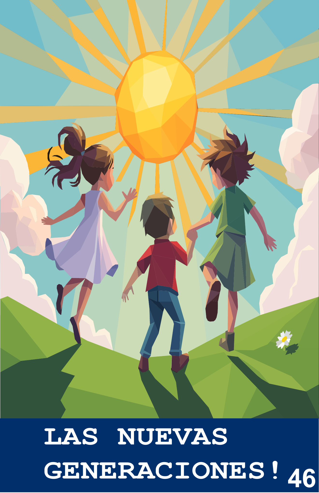
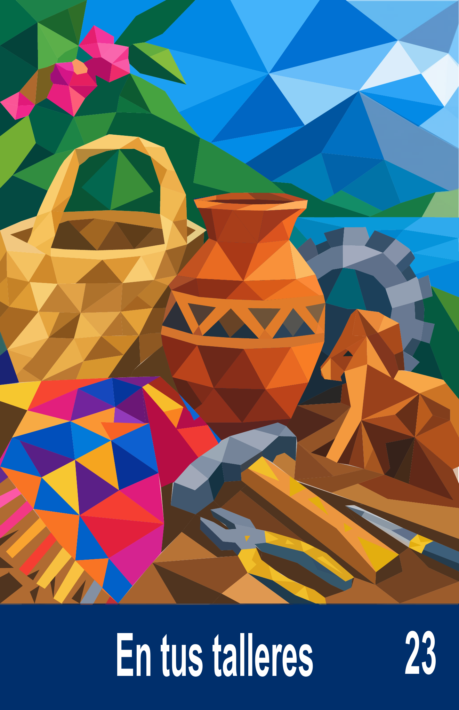
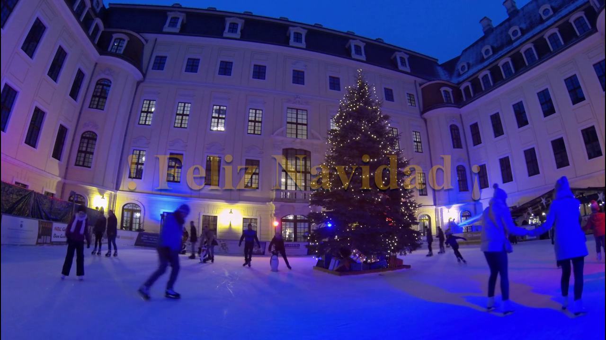

GIMPComposición digital: gatito
Composición de un gatito recortado e integrado en un paisaje con elementos gráficos.
Universidad Dr. Andrés Bello
Descubre las innovaciones, el software y los proyectos tecnológicos desarrollados por nuestros estudiantes de Ingeniería en Sistemas.
Aquí presentamos una selección de los proyectos realizados durante el ciclo, utilizando diferentes herramientas de diseño y edición multimedia.

GIMPComposición de un gatito recortado e integrado en un paisaje con elementos gráficos.

GIMPIntegración de personajes sobre un fondo de paisaje mediante edición de imágenes.

INKSCAPECartel ilustrado con figuras geométricas, personajes y composición de color.

INKSCAPEIlustración vectorial de objetos artesanales organizados en una composición gráfica.
Archivo de locución en formato WAV, preparado como ejercicio de edición de audio.

OPENSHOTProducción audiovisual de 1 minuto y 11 segundos con una escena de ambiente navideño.
No hay trabajos cargados en esta categoría por el momento.
Conoce a los integrantes que forman parte de nuestro proyecto universitario.
Información académica e institucional.
Consulta el repositorio del proyecto:
Repositorio pendiente de publicaciónPortafolio académico del GRUPO ELEVEN. El enlace del repositorio puede añadirse cuando esté publicado.